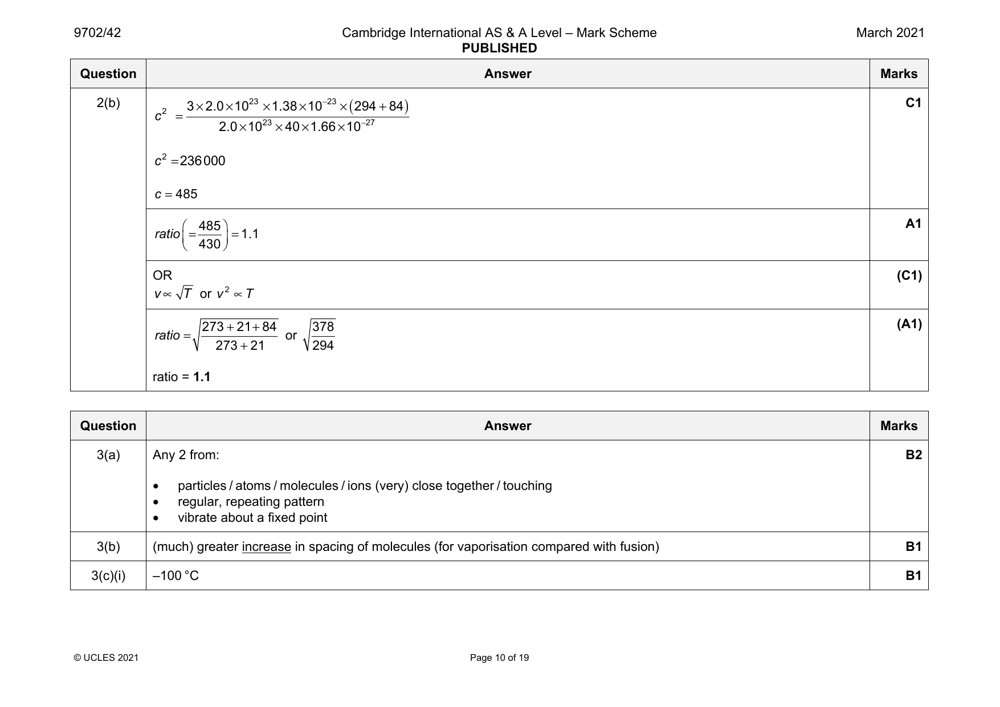
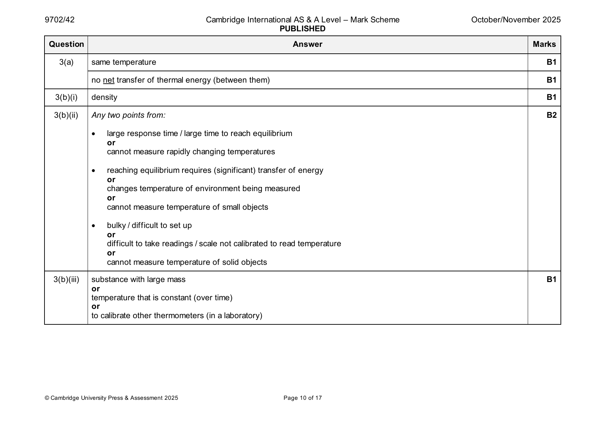

9702-2021-m-42-q03
March 2021 · Paper 42 · Question 3 · 8 marks



3
3×2.3×105 ×3.5×10 −3
c2 =
2.0×1023×40×1.66×10 −27
= 182 000
r.m.s. speed = 430 m s–1
or A1
1 mc2 =3 kT
2 2
3×1.38×10 −23 ×294 (C1)
c2 =
40×1.66×10 −27
= 183 000
r.m.s.speed = 430 m s–1 (A1)
© UCLES 2021 Page 9 of 19
3(a) Any 2 from: B2
• particles / atoms / molecules / ions (very) close together / touching
• regular, repeating pattern
• vibrate about a fixed point
3(b) (much) greater increase in spacing of molecules (for vaporisation compared with fusion) B1
3(c)(i) –100 °C B1
© UCLES 2021 Page 10 of 19
3(c)(ii) time = 8.5 – 3.0 C1
= 5.5 min
Pt = mL C1
energy = power × time = 150 × 5.5 × 60
= 49 500 J
E
L =
m
49 500
=
0.045
=1100 kJ kg −1 A1
3(c)(iii) gas has a higher specific heat capacity (than liquid) B1
Question Answer Marks
Official mark scheme pages: 9, 10, 11 · source PDF URL
9702-2021-mj-41-q08
May/June 2021 · Paper 41 · Question 8 · 9 marks
8(a) V+ = 3.0 × 3.0 / (2.5 + 3.0) C1
= 1.6 V A1
8(b) V – is +2.0 V B1
or
V – > V +
output is negative so (LED) does not emit light B1
8(c) at 0 °C, V – = 1.7 V B1
or
for all temperatures above 0 °C, resistance of thermistor < 4.2 kΩ
V – always greater than V + (so no switching) B1
8(d) (at 20 °C,) R = 1.8 kΩ C1
T
2.5 / 3.0 = 1.8 / R C1
or
[R / (R + 1.8)] × 3.0 = 1.6
R = 2.2 kΩ A1
© UCLES 2021 Page 14 of 18
Official mark scheme pages: 14 · source PDF URL
9702-2021-mj-42-q07
May/June 2021 · Paper 42 · Question 7 · 9 marks
7(a)(i) no current enters/leaves the input B1
7(a)(ii) gain is the same for all frequencies B1
7(b)(i) V = 1.5 × 400 / (400 + 1100) = 0.40 V A1
IN
or
V = 1.5 – (1.5 × 1100 / 1500) = 0.40 V
IN
or
(1.5 – V ) / 1100 = V / 400 so V = 0.40 V
IN IN IN
7(b)(ii) gain = (–) R /R C1
f i
V /0.40 = (360 + 100) / 96 C1
OUT
V = 1.9 V A1
OUT
7(b)(iii) resistance of thermistor decreases B1
(magnitude of) gain decreases so reading decreases B1
7(b)(iv) (at gain 12.5) V is 5.0 V, so (above gain 12.5) output becomes saturated B1
OUT
© UCLES 2021 Page 14 of 19
Official mark scheme pages: 14 · source PDF URL
9702-2021-mj-43-q08
May/June 2021 · Paper 43 · Question 8 · 9 marks
8(a) V+ = 3.0 × 3.0 / (2.5 + 3.0) C1
= 1.6 V A1
8(b) V – is +2.0 V B1
or
V – > V +
output is negative so (LED) does not emit light B1
8(c) at 0 °C, V – = 1.7 V B1
or
for all temperatures above 0 °C, resistance of thermistor < 4.2 kΩ
V – always greater than V + (so no switching) B1
8(d) (at 20 °C,) R = 1.8 kΩ C1
T
2.5 / 3.0 = 1.8 / R C1
or
[R / (R + 1.8)] × 3.0 = 1.6
R = 2.2 kΩ A1
© UCLES 2021 Page 14 of 18
Official mark scheme pages: 14 · source PDF URL
9702-2022-m-42-q10
March 2022 · Paper 42 · Question 10 · 7 marks
10(a) energy = mcΔT C1
energy = ItV C1
0.40×0.020×75 000 ×0.95
(ΔT =)
0.015×130
=290 K A1
10(b) I = I e −μt C1
o
0.20 = e
−0.22t
t = 7.3 cm A1
© UCLES 2022 Page 14 of 17
10(c) either M1
(linear) attenuation coefficients / μ very different for bone and muscle
(very) different amounts (of X-rays) absorbed so good contrast A1
or (very) different intensities transmitted so good contrast
or (M1)
(linear) attenuation coefficients / μ similar for blood and muscle
similar amounts (of X-rays) absorbed so poor contrast (A1)
or similar intensities transmitted so poor contrast
Question Answer Marks
Official mark scheme pages: 14, 15 · source PDF URL
9702-2022-on-41-q02
Oct/Nov 2022 · Paper 41 · Question 2 · 10 marks
2(a) • resistance of a metal B2
• volume of a gas at constant pressure
• e.m.f. of a thermocouple
Any two points, 1 mark each
2(b)(i) Q = mcT C1
evidence of realisation that Q lost by water = Q gained by mercury C1
18.7 4.18 (37.4 – T) = 6.94 0.140 (T – 23.0) C1
T = 37.2 °C A1
2(b)(ii) use a liquid with a lower (specific) heat capacity (than mercury) B1
or
use a smaller mass of mercury
2(c)(i) depends on properties of a real substance B1
0 °C is not absolute zero B1
2(c)(ii) ideal gas B1
© UCLES 2022 Page 7 of 15
Official mark scheme pages: 7 · source PDF URL
9702-2022-on-42-q03
Oct/Nov 2022 · Paper 42 · Question 3 · 10 marks
3(a) p = pressure (of gas), V = volume (of gas) and k = Boltzmann constant B1
N = number of molecules B1
T = thermodynamic temperature B1
3(b) (pV = NkT and pV = ⅓Nm<c2> leading to) NkT = ⅓Nm<c2> M1
algebra leading to (3/2)kT = ½m<c2> and use of ½m<c2> = E leading to (3/2)kT = E A1
K K
3(c)(i) T = 296 K C1
½m<c2> = (3/2)kT C1
½ 5.31 10–26 u2 = (3/2) 1.38 10–23 296
u = 480 m s–1 A1
3(c)(ii) line passing through (P, u) B1
horizontal straight line B1
© UCLES 2022 Page 8 of 16
Official mark scheme pages: 8 · source PDF URL
9702-2022-on-43-q02
Oct/Nov 2022 · Paper 43 · Question 2 · 10 marks
2(a) • resistance of a metal B2
• volume of a gas at constant pressure
• e.m.f. of a thermocouple
Any two points, 1 mark each
2(b)(i) Q = mcT C1
evidence of realisation that Q lost by water = Q gained by mercury C1
18.7 4.18 (37.4 – T) = 6.94 0.140 (T – 23.0) C1
T = 37.2 °C A1
2(b)(ii) use a liquid with a lower (specific) heat capacity (than mercury) B1
or
use a smaller mass of mercury
2(c)(i) depends on properties of a real substance B1
0 °C is not absolute zero B1
2(c)(ii) ideal gas B1
© UCLES 2022 Page 7 of 15
Official mark scheme pages: 7 · source PDF URL
9702-2023-mj-41-q03
May/June 2023 · Paper 41 · Question 3 · 11 marks
3(a) no net thermal energy is transferred (between them) B1
3(b)(i) variation (of density with temperature) is linear B1
or
each temperature has a unique value of density
3(b)(ii) variation (of density with temperature) is not linear B2
region where the density does not vary with temperature
different temperatures have the same density
Any two points, 1 mark each
3(c)(i) boiling point = 80 °C A1
3(c)(ii) Q = Pt and t = 21 s C1
(thermal energy supplied = 810 21 = 17000 J)
c = Q / m C1
thermal energy absorbed by beaker = 42 0.84 (80 – 25) C1
( = 1940 J)
s.h.c. of liquid = [(810 21) – (42 0.84 (80 – 25))] / [120 (80 – 25)] A1
= 2.3 J g–1 K–1
3(d) sketch: straight diagonal line from 25 °C to 100 °C and then horizontal at 100 °C B1
straight diagonal line starting at 25 °C with gradient approximately half that of the original line B1
© UCLES 2023 Page 9 of 16
Official mark scheme pages: 9 · source PDF URL
9702-2023-mj-42-q02
May/June 2023 · Paper 42 · Question 2 · 12 marks
2(a)(i) (gas that obeys) pV T (for all values of p,V and T) M1
where T is thermodynamic temperature A1
2(a)(ii) temperature = –273.15 °C A1
2(b)(i) pV = NkT C1
N = (1.37 105 0.640) / (1.38 10–23 (227 + 273)) C1
= 1.27 1025 A1
2(b)(ii) mass = 0.0424 / (1.27 1025) A1
= 3.34 10–27 kg
2(b)(iii) ½m<c2> = (3 / 2)kT C1
3.34 10–27 v2 = 3 1.38 10–23 500 C1
v = 2490 m s–1 A1
or
pV = ⅓(Nm) <c2> and Nm = mass of gas (C1)
0.0424 v2 = 3 1.37 105 0.640 (C1)
v = 2490 m s–1 (A1)
2(c) sketch: line from (0, 0) to (500, v) B1
line with decreasing positive gradient throughout B1
© UCLES 2023 Page 7 of 15
Official mark scheme pages: 7 · source PDF URL
9702-2023-mj-43-q03
May/June 2023 · Paper 43 · Question 3 · 11 marks
3(a) no net thermal energy is transferred (between them) B1
3(b)(i) variation (of density with temperature) is linear B1
or
each temperature has a unique value of density
3(b)(ii) variation (of density with temperature) is not linear B2
region where the density does not vary with temperature
different temperatures have the same density
Any two points, 1 mark each
3(c)(i) boiling point = 80 °C A1
3(c)(ii) Q = Pt and t = 21 s C1
(thermal energy supplied = 810 21 = 17000 J)
c = Q / m C1
thermal energy absorbed by beaker = 42 0.84 (80 – 25) C1
( = 1940 J)
s.h.c. of liquid = [(810 21) – (42 0.84 (80 – 25))] / [120 (80 – 25)] A1
= 2.3 J g–1 K–1
3(d) sketch: straight diagonal line from 25 °C to 100 °C and then horizontal at 100 °C B1
straight diagonal line starting at 25 °C with gradient approximately half that of the original line B1
© UCLES 2023 Page 9 of 16
Official mark scheme pages: 9 · source PDF URL
9702-2024-mj-41-q02
May/June 2024 · Paper 41 · Question 2 · 7 marks
2(a)(i) 0 K B1
2(a)(ii) (measurement) depends on properties of the liquid B1
2(b)(i) resistivity varies with temperature B2
variation with temperature is linear
unique value of resistivity for each (different value of) temperature
Any two points, 1 mark each
2(b)(ii) thermometer has high heat capacity/specific heat capacity B1
or
energy transfer needed for thermometer to reach correct temperature
or
thermometer takes time to reach the correct temperature
2(b)(iii) thermocouple B1
2(c) (variation is) inverse B1
or
(variation is) non-linear
© Cambridge University Press & Assessment 2024 Page 7 of 15
Official mark scheme pages: 7 · source PDF URL
9702-2024-mj-41-q07
May/June 2024 · Paper 41 · Question 7 · 10 marks
7(a) rectification (of the input voltage) M1
full-wave A1
7(b)(i) P = V2 / R C1
or
maximum V = 9.0 V
P = 9.02 / 370 = 0.22 W A1
MAX
7(b)(ii) sinusoidal shape with minima sitting on the time axis B1
correct frequency and phase, with minima at 0, 0.02, 0.04, 0.06 and 0.08 s and maxima at 0.01, 0.03, 0.05 and 0.07 s B1
all maxima shown at 0.22 W B1
7(b)(iii) mean power = peak power / 2 = 0.22 / 2 A1
= 0.11 W
7(c) power–time graph is identical B1
(so) mean powers are equal B1
© Cambridge University Press & Assessment 2024 Page 12 of 15
Official mark scheme pages: 12 · source PDF URL
9702-2024-mj-43-q02
May/June 2024 · Paper 43 · Question 2 · 7 marks
2(a)(i) 0 K B1
2(a)(ii) (measurement) depends on properties of the liquid B1
2(b)(i) resistivity varies with temperature B2
variation with temperature is linear
unique value of resistivity for each (different value of) temperature
Any two points, 1 mark each
2(b)(ii) thermometer has high heat capacity/specific heat capacity B1
or
energy transfer needed for thermometer to reach correct temperature
or
thermometer takes time to reach the correct temperature
2(b)(iii) thermocouple B1
2(c) (variation is) inverse B1
or
(variation is) non-linear
© Cambridge University Press & Assessment 2024 Page 7 of 15
Official mark scheme pages: 7 · source PDF URL
9702-2024-mj-43-q07
May/June 2024 · Paper 43 · Question 7 · 10 marks
7(a) rectification (of the input voltage) M1
full-wave A1
7(b)(i) P = V2 / R C1
or
maximum V = 9.0 V
P = 9.02 / 370 = 0.22 W A1
MAX
7(b)(ii) sinusoidal shape with minima sitting on the time axis B1
correct frequency and phase, with minima at 0, 0.02, 0.04, 0.06 and 0.08 s and maxima at 0.01, 0.03, 0.05 and 0.07 s B1
all maxima shown at 0.22 W B1
7(b)(iii) mean power = peak power / 2 = 0.22 / 2 A1
= 0.11 W
7(c) power–time graph is identical B1
(so) mean powers are equal B1
© Cambridge University Press & Assessment 2024 Page 12 of 15
Official mark scheme pages: 12 · source PDF URL
9702-2024-on-41-q02
Oct/Nov 2024 · Paper 41 · Question 2 · 8 marks
2(a) (thermal) energy per unit mass (to change temperature) B1
(thermal) energy per unit change in temperature B1
2(b)(i) Any three bulleted points from: B3
• the blocks end up in thermal equilibrium
• heat capacity of Y is larger than heat capacity of X
• no heat loss to the surroundings
Up to 2 points from these six:
• initial temperature of X = 85 °C
• initial temperature of Y = 25 °C
• the temperature change of X = 45 °C
• the temperature change of Y = 15 °C
• the temperature change in X is three times that in Y
• final temperature of both = 40 °C
2(b)(ii) = 45 °C for X and 15 °C for Y C1
mc 45 = 1.3 m 901 15 C1
c = 390 J kg K–1 A1
© Cambridge University Press & Assessment 2024 Page 7 of 15
Official mark scheme pages: 7 · source PDF URL
9702-2024-on-43-q02
Oct/Nov 2024 · Paper 43 · Question 2 · 8 marks
2(a) (thermal) energy per unit mass (to change temperature) B1
(thermal) energy per unit change in temperature B1
2(b)(i) Any three bulleted points from: B3
• the blocks end up in thermal equilibrium
• heat capacity of Y is larger than heat capacity of X
• no heat loss to the surroundings
Up to 2 points from these six:
• initial temperature of X = 85 °C
• initial temperature of Y = 25 °C
• the temperature change of X = 45 °C
• the temperature change of Y = 15 °C
• the temperature change in X is three times that in Y
• final temperature of both = 40 °C
2(b)(ii) = 45 °C for X and 15 °C for Y C1
mc 45 = 1.3 m 901 15 C1
c = 390 J kg K–1 A1
© Cambridge University Press & Assessment 2024 Page 7 of 15
Official mark scheme pages: 7 · source PDF URL
9702-2025-m-42-q03
March 2025 · Paper 42 · Question 3 · 12 marks
3(a)(i) (P and Q are at the) same temperature B1
no net transfer of thermal energy (between P and Q) B1
3(a)(ii) Q = mcT C1
24 103 = (0.54 390 T) + (0.37 910 T) C1
T = 44K A1
3(b)(i) work done = pV C1
= (1.6 105) (0.18 – 0.32) C1
= –2.2 104J A1
3(b)(ii) pV = NkT C1
N = (1.6 105 0.18) / (1.38 10–23 273) A1
= 7.6 1024
3(b)(iii) ½m<c2> = (3 / 2)kT C1
r.m.s. speed = √[(3 1.38 10–23 (210 + 273) / (4.7 10–26)] A1
= 650ms–1
© Cambridge University Press & Assessment 2025 Page 8 of 14
Official mark scheme pages: 8 · source PDF URL
9702-2025-mj-41-q03
May/June 2025 · Paper 41 · Question 3 · 9 marks
3(a) (thermal) energy per unit mass (to cause state change) B1
(thermal) energy to change state at constant temperature B1
3(b) (for vaporisation): B1
involves greater change in volume (of substance)
or
involves greater increase in separation of molecules
more work has to be done by molecules (to separate) M1
or
greater increase in potential energy of molecules
kinetic energy of molecules unchanged, so more thermal energy needed A1
3(c) Q = mc and Q = mL C1
for the water = 26.4 – 10.3 C1
(37.0 × L) + (37.0 × 4.18 × 10.3) = (208 × 4.18 × 16.1) C1
L = 335 J g–1 A1
© Cambridge University Press & Assessment 2025 Page 11 of 19
Official mark scheme pages: 11 · source PDF URL
9702-2025-mj-43-q03
May/June 2025 · Paper 43 · Question 3 · 9 marks
3(a) (thermal) energy per unit mass (to cause state change) B1
(thermal) energy to change state at constant temperature B1
3(b) (for vaporisation): B1
involves greater change in volume (of substance)
or
involves greater increase in separation of molecules
more work has to be done by molecules (to separate) M1
or
greater increase in potential energy of molecules
kinetic energy of molecules unchanged, so more thermal energy needed A1
3(c) Q = mc and Q = mL C1
for the water = 26.4 – 10.3 C1
(37.0 × L) + (37.0 × 4.18 × 10.3) = (208 × 4.18 × 16.1) C1
L = 335 J g–1 A1
© Cambridge University Press & Assessment 2025 Page 11 of 19
Official mark scheme pages: 11 · source PDF URL
9702-2025-on-41-q04
Oct/Nov 2025 · Paper 41 · Question 4 · 10 marks
4(a)(i) temperature = –273.15 °C A1
4(a)(ii) temperature = 0 K A1
4(b)(i) gas is ideal B1
4(b)(ii) pV = NkT C1
N = 270 / (8.0 10–21) A1
= 3.4 1022
4(b)(iii) n = (3.4 1022) / (6.02 1023) A1
= 0.056 mol
4(c) ½ m<c2> = (3 / 2) kT C1
½ m 19002 = 1.5 8.0 10–21 C1
(m = 6.65 10–27 kg)
m = (6.65 10–27) / (1.66 10–27) C1
= 4.0 u A1
© Cambridge University Press & Assessment 2025 Page 11 of 17
Official mark scheme pages: 11 · source PDF URL
9702-2025-on-42-q03
Oct/Nov 2025 · Paper 42 · Question 3 · 9 marks


3(a) same temperature B1
no net transfer of thermal energy (between them) B1
3(b)(i) density B1
3(b)(ii) Any two points from: B2
• large response time / large time to reach equilibrium
or
cannot measure rapidly changing temperatures
• reaching equilibrium requires (significant) transfer of energy
or
changes temperature of environment being measured
or
cannot measure temperature of small objects
• bulky / difficult to set up
or
difficult to take readings / scale not calibrated to read temperature
or
cannot measure temperature of solid objects
3(b)(iii) substance with large mass B1
or
temperature that is constant (over time)
or
to calibrate other thermometers (in a laboratory)
© Cambridge University Press & Assessment 2025 Page 10 of 17
3(b)(iv) 0 °C = 273 K C1
T = 273 (7.83 – 2.31) / (8.69 – 2.31) C1
( = 236 K)
= 236 – 273 A1
= – 37 °C
Question Answer Marks
Official mark scheme pages: 10, 11 · source PDF URL
9702-2025-on-43-q04
Oct/Nov 2025 · Paper 43 · Question 4 · 10 marks
4(a)(i) temperature = –273.15 °C A1
4(a)(ii) temperature = 0 K A1
4(b)(i) gas is ideal B1
4(b)(ii) pV = NkT C1
N = 270 / (8.0 10–21) A1
= 3.4 1022
4(b)(iii) n = (3.4 1022) / (6.02 1023) A1
= 0.056 mol
4(c) ½ m<c2> = (3 / 2) kT C1
½ m 19002 = 1.5 8.0 10–21 C1
(m = 6.65 10–27 kg)
m = (6.65 10–27) / (1.66 10–27) C1
= 4.0 u A1
© Cambridge University Press & Assessment 2025 Page 11 of 17
Official mark scheme pages: 11 · source PDF URL